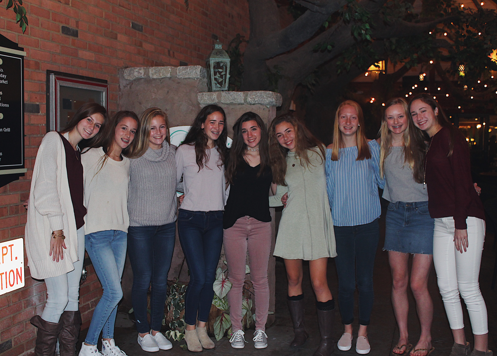
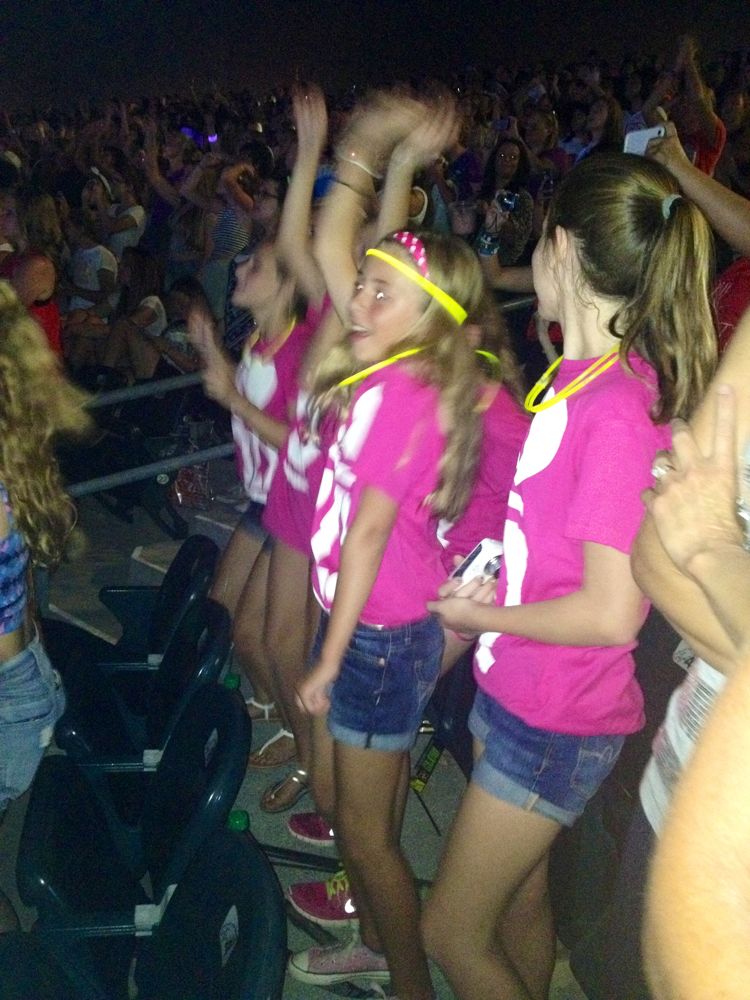
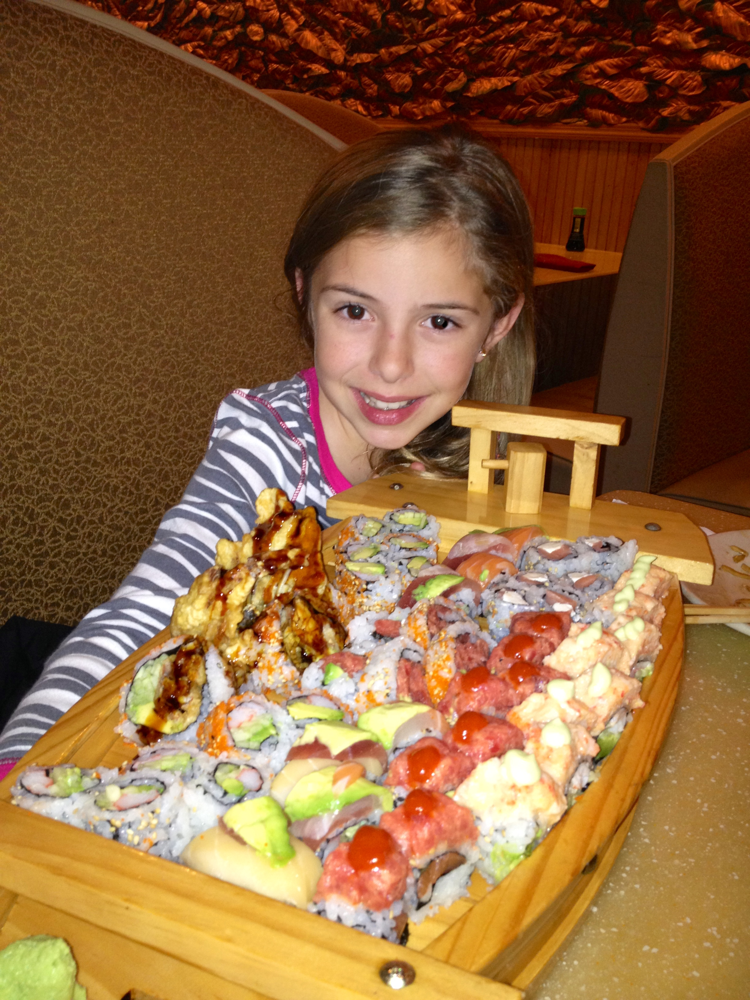
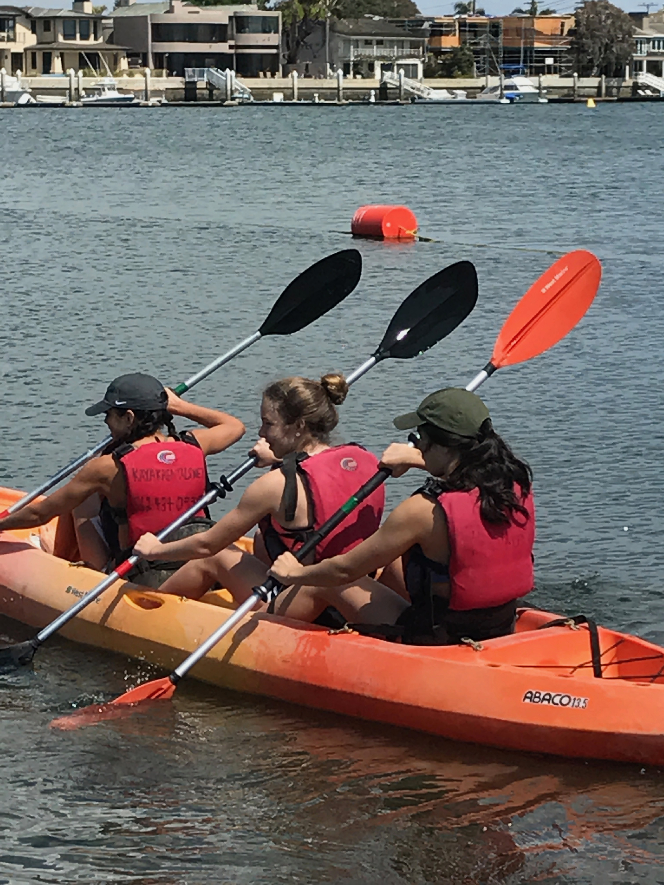
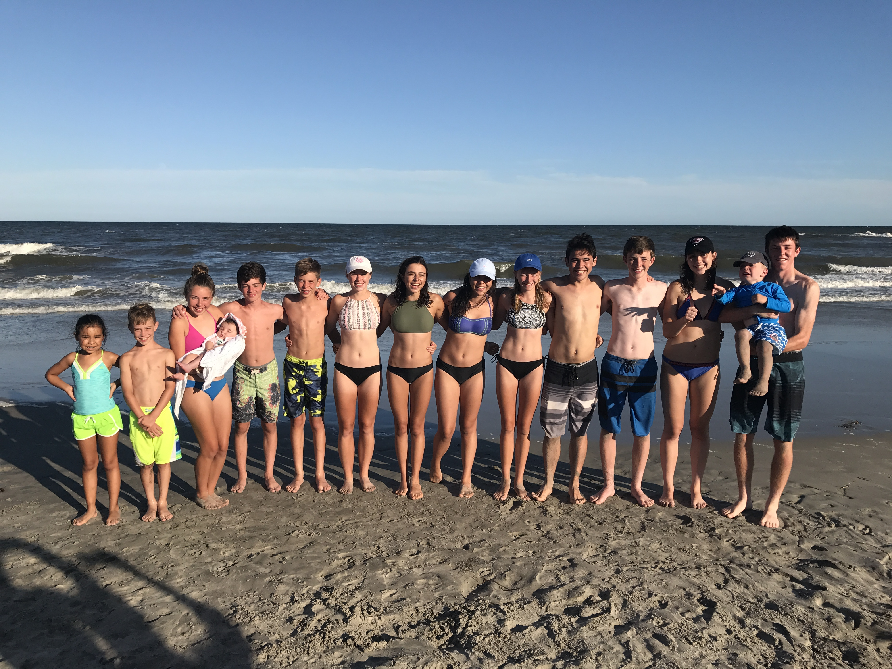
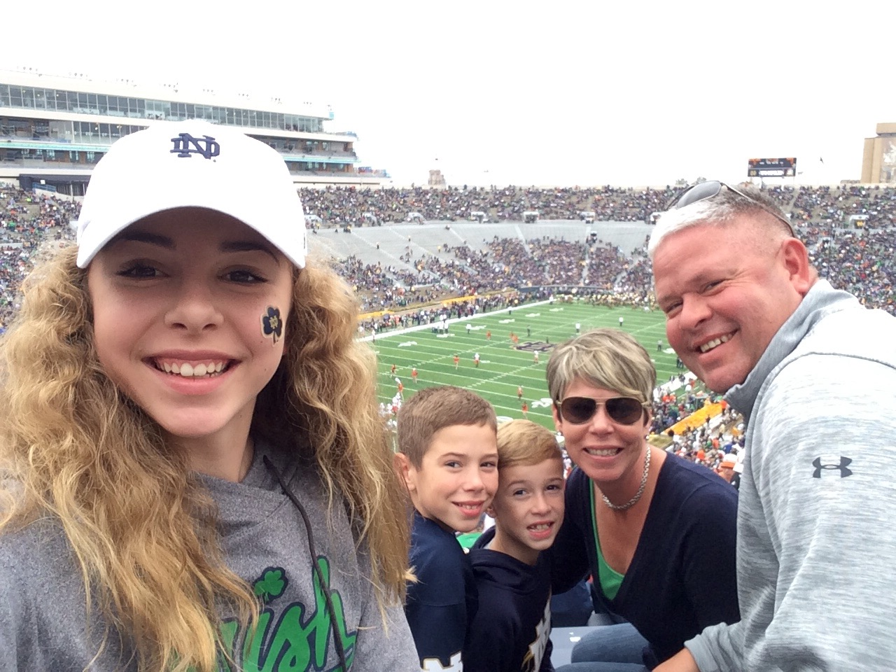

My Favorite Things
- family & friends

A picture of my friends and I on my birthday.
- concerts

My friends and I dancing at one of my first concerts.
- sushi

A picture of me when I was younger out to eat with my parents.
- traveling

My cousins and I kayaking while I was visiting them in California.
- spending time with my cousins

A picture of my cousins and I at the Jersey shore on our annual vacation.
- watching sports events

My family watching Notre Dame football play Miami in Indiana.
- summertime
 My brothers's friend and I jetskiing at Buttonwood beach.
My brothers's friend and I jetskiing at Buttonwood beach.